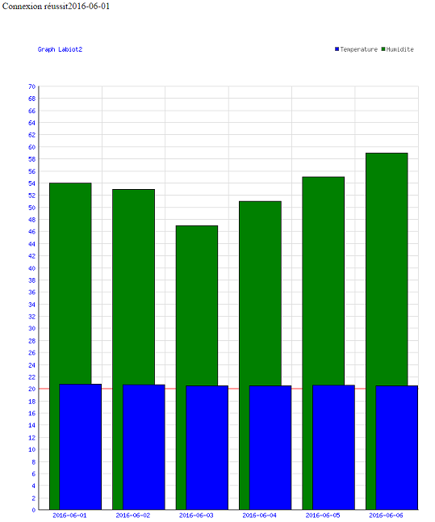
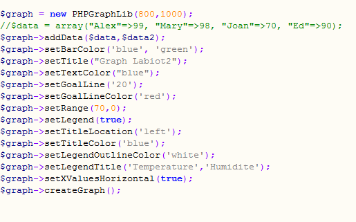
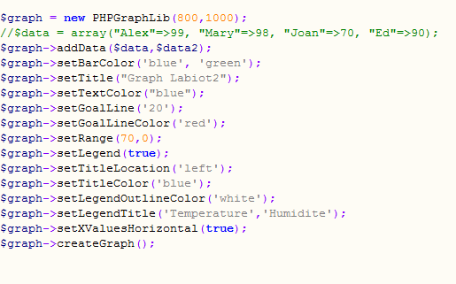

Labiot2
Présentaion : Labiot2 est le nom du projet que j'ai réalisé lors du stage de 1ere année de BTS Slam. Ce projet m'avait été proposé par le sous directeur du service dans lequel je me trouvais. Il m'avait confié la mission de réalisé un graphique montrant l'évolution de la température et de l'humidité en fonction du temps. J'avais à disposition une base de donnée dans laquelle ce trouvait les données de température émisent par une sonde Lora qui se trouvait sur le toit du batiment. Pour répondre au besoin,j'ai donc fais le choix de concevoir une application PHP qui prend en arguement la période sur laquelle le graphe doit ce crée.
Aperçu du graphe:
Fonctionnement de l'application :
Pour réaliser ce projet, j'ai du faire un réel travail personnel de recherche afin de chercher comment pouvoir réaliser une structure graphique en php.
Egalement, j'ai du faire des
modifications au niveau de la base de donnée afin que le graphique devienne possible à la réalisation. J'ai créer une table "moyenne" dans laquelle j'y insert les moyennes de température par jour.
 Afin de pouvoir génerer le graph à partir des données récupérées j'ai d'abord essayer plusieurs solutions avant de trouver celle qui convenait. En effet, je suis tomber sur le site de ELLIOT Bruggeman qui est un développeur de logiciel vivant à Seattle dans lequel on peux trouver des codes sources pour différent
types de graphiques dont voici le lien ici . J'ai donc télécharger la librairie qui m'intéressais. A savoir "PHPGRAPHLIB" dont le lien ce trouve plus bas.
Cette librairie permet de génerer le graphique d'une manière plutôt simple. Dans la page de création du graphe, il suffit d'initaliser les options avec les valeurs souhaitées (couleur , valeur des variables).

A partir
d'une Data table, l'outil nous génère le graphique automatiquement à la fin du traitement. Bien sur , il a fallu au préalable rédiger tout le traitement nécessaire pour obtenir les moyennes.
Afin de pouvoir génerer le graph à partir des données récupérées j'ai d'abord essayer plusieurs solutions avant de trouver celle qui convenait. En effet, je suis tomber sur le site de ELLIOT Bruggeman qui est un développeur de logiciel vivant à Seattle dans lequel on peux trouver des codes sources pour différent
types de graphiques dont voici le lien ici . J'ai donc télécharger la librairie qui m'intéressais. A savoir "PHPGRAPHLIB" dont le lien ce trouve plus bas.
Cette librairie permet de génerer le graphique d'une manière plutôt simple. Dans la page de création du graphe, il suffit d'initaliser les options avec les valeurs souhaitées (couleur , valeur des variables).

A partir
d'une Data table, l'outil nous génère le graphique automatiquement à la fin du traitement. Bien sur , il a fallu au préalable rédiger tout le traitement nécessaire pour obtenir les moyennes.